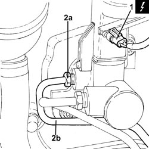
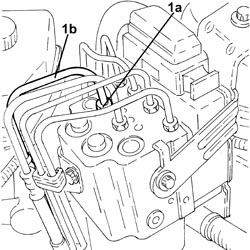
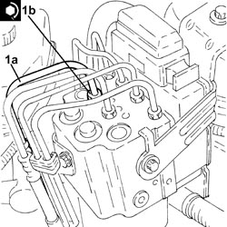
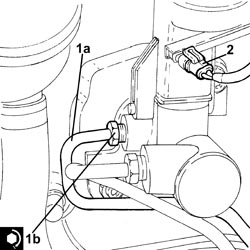

3340B52 RIGID PIPE (ONE) FROM MASTER CYLINDER (PUMP) TO A.B.S HYDRAULIC CONTROL UNIT - R.R.
- Path
- Procedures > 33 BRAKES > 3340 ANTI-LOCK BRAKING SYSTEM (ABS) > 3340B ABS SYSTEM PIPES > 3340B52 RIGID PIPE (ONE) FROM MASTER CYLINDER (PUMP) TO A.B.S HYDRAULIC CONTROL UNIT - R.R.
- Kind
- repair procedure (removal / refitting; the operation number is the code)
- Applies to
- all engines; all production periods
- Interactive page
- https://sloeber94.github.io/elrnDB-fCrm/en/#/194000504
Applies to: all engines; all production periods
 Removing
Removing
 Refitting
Refitting- Make sure that the ignition key is in the OFF position, then disconnect the battery terminal (-).
Description | Connector | |
|---|---|---|
- | Battery |
Applies to: all engines; all production periods
1. Disconnect the electrical connection from the brake fluid minimum level warning light switch.
Description | Connector | |
|---|---|---|
1 | Brake fluid level sensor (switch) |
2. Undo the connector (2a) and disconnect the rigid pipe from the master cylinder to the A.B.S.hydraulic control unit (2b), master cylinder side.

Applies to: all engines; all production periods
1. Undo the connector (1a) and disconnect the rigid pipe from the master cylinder to the A.B.S.hydraulic control unit (1b), hydraulic cylinder side and remove it.

Applies to: all engines; all production periods
Refitting
Removing1. Place the rigid pipe from the master cylinder to the A.B.S. hydraulic control unit (1a) in its housing, connect to the hydraulic control unit and tighten the connector (1b) to the recommended torque.
Component | Fastening | dia | Value (daNm) | Validity |
|---|---|---|---|---|
Brake pipe connectors | Connector | M10/M12 | 1.4 ÷ 1.8 |

Applies to: all engines; all production periods
1. Connect the rigid pipe from the master cylinder to the A.B.S. hydraulic control unit (1a), master cylinder side and tighten the connector (1b) to the recommended torque.
Component | Fastening | dia | Value (daNm) | Validity |
|---|---|---|---|---|
Brake pipe connectors | Connector | M10/M12 | 1.4 ÷ 1.8 |
2. Connect the electrical connection to the brake fluid minimum level warning light switch.

Applies to: all engines; all production periods
- Connect the negative battery terminal.
Op. 0010T64 BRAKE AND/OR CLUTCH FLUID CHECK LEVEL AND TOP UP AS NECESSARY